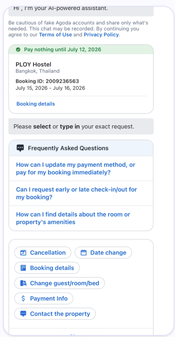
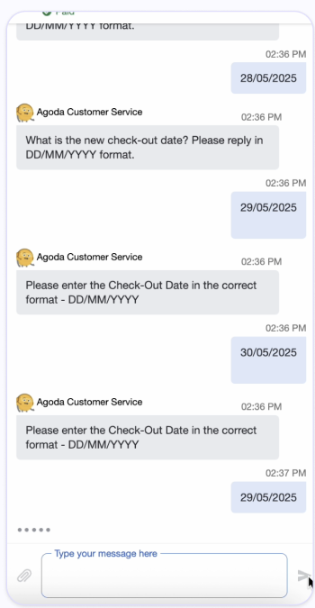
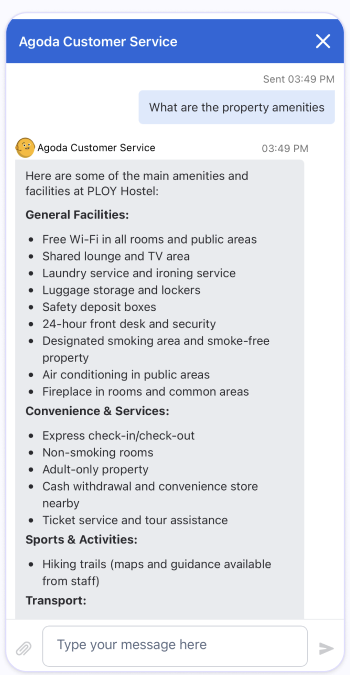
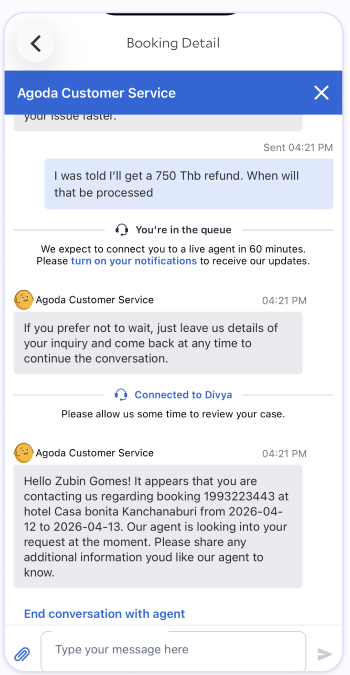
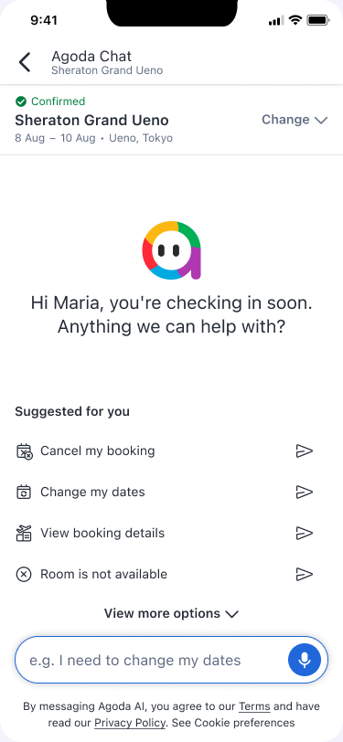
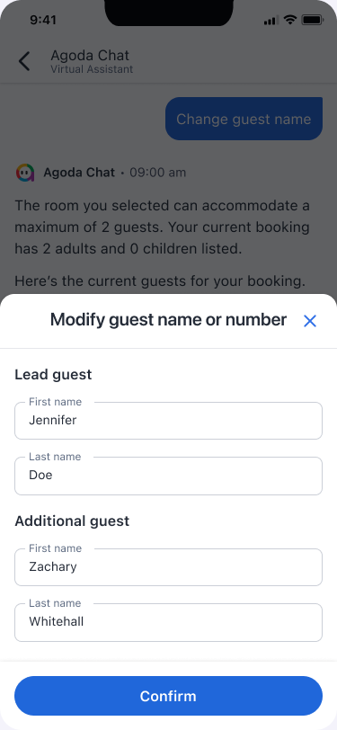
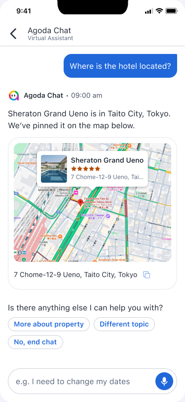
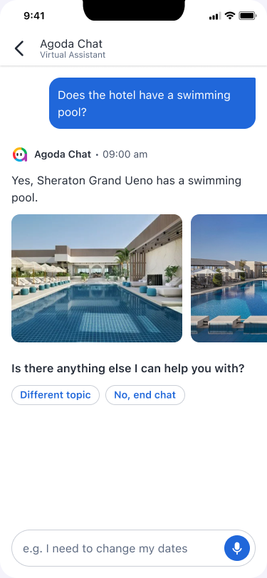
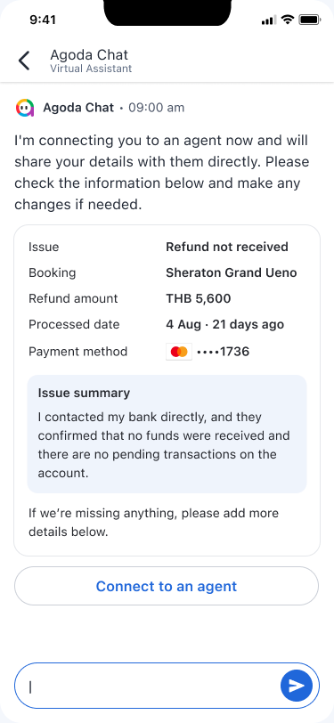

01 / Context
A support channel built for self-service was creating new uncertainty.
VIVR is Agoda’s web-based visual support experience for managing bookings without a call. But guests entered dense menus, chose the wrong route, lost context between surfaces and struggled to tell whether an action had worked.
The North Star work stepped back from individual flows to define what the entire support journey should feel like—from the first question to resolution, human handover and return visits.
The problem landscape
Guests were doing the work of the system.
Journey analysis showed compounding friction: guests struggled to find the right path, abandoned long flows, lost visibility after submitting and repeated context during handover.




Supporting signals: 51% selected the wrong intent; abandonment reached 65% in the free-cancellation request proxy; and 20% contacted support while a request was pending—48% within two hours.
02 / North Star
One request journey, even when the channel changes.
A guest may check policy in booking management, start a request in VIVR, continue with a human agent and return later for the outcome. Internally these are different systems; to the guest, they are one continuous task.
At any point, guests should know what will happen, what is happening, what happened and what to do next.
03 / Design framework
GUIDE turned research into five experience rules.
The framework connected recurring journey failures to practical design decisions.
- G
Guidance
Make the best next step obvious.
- U
User context
Use booking information already known.
- I
Input efficiency
Reduce repeated questions and effort.
- D
Dead-end recovery
Explain failure and offer a way forward.
- E
Empathetic design
Communicate clearly when stakes feel high.
04 / Design solutions
Solve the moments where confidence breaks.
The design addresses the journey’s biggest breakdowns directly: contextual entry helps guests find the right path, clearer responses reduce errors, visible request status removes uncertainty after submission, and informed handover carries context to an agent without forcing guests to repeat themselves.

Start from the booking, not a generic menu
Instead of forcing guests through intent buttons, the design puts free-text conversation first. Booking context and suggested prompts provide lightweight guidance, helping guests ask naturally while still finding the right path.

Make booking changes easier to complete
A structured form makes every required field visible upfront, allows details to be reviewed in one place and reduces repetitive chat turns—directly addressing the 22% mid-flow drop-off seen in booking modification flows.


Turn dense answers into something scannable
Maps, images and visual cards replace long text responses with information guests can understand at a glance—reducing the time and effort needed to scan and comprehend an answer.

Make the human transition unmistakable
Clear agent identity and a visible context package remove repetition and ambiguity.
05 / Post-booking continuity
VIVR is one part of a connected post-booking journey.
A guest may begin in Booking Details, continue in VIVR, wait for a property decision and escalate to an agent. The North Star only works when that feels like one request—not four disconnected interactions.
Booking context, request status, previous actions and the next step should move across EBP, VIVR and customer service. This lets guests resume where they left off, see the same status everywhere and reach an informed agent without starting again.